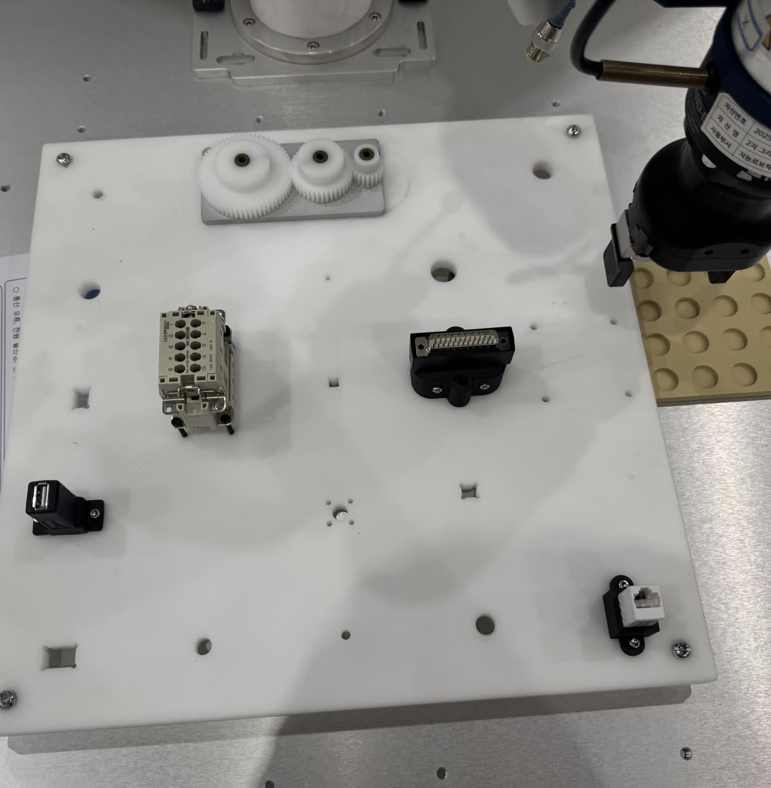

Jusung Kim
I'm a Research Intern at the Intelligent Robotics Center, KETI (Korea Electronics Technology Institute). I build learning-based control for real robots — my work spans reinforcement / imitation learning, sim-to-real transfer, and robot manipulation & control.
I hold a B.S. in Aerospace Engineering from Konkuk University and a B.S. in Aero Mechanical Engineering from Hanseo University.
News
- 2026 Deployed an ACT policy on the real SO-101 arm: 74% task completion over 50 cube-stacking trials, closed-loop at 30 Hz.
- 2026 Built an end-to-end ROS 2 imitation-learning pipeline on a real SO-101 arm pair — teleoperation, dataset conversion, ACT & flow-matching policies, closed-loop inference.
- 2026 Demonstrated our imitation-learning manipulation framework live at AutomationWorld 2026.
- 2026 Poster on RBFNN-based disturbance compensation accepted at KRoC 2026.
- 2024 Poster on fingertip contact-location estimation presented at ICCAS 2024.
- 2024 Started as a Research Intern at KETI Intelligent Robotics Center.
Projects
|
SO-101: ROS 2 Imitation Learning Pipeline (ACT & Flow Matching) Independent research · 2026 – Present Sole developer (100%) End-to-end imitation learning on a real SO-101 arm pair — ROS 2 teleop and episode recorder, rosbag → LeRobot v3.0 conversion, ACT and flow-matching policies, and closed-loop inference on hardware. Both policies were then run on hardware over the same 60 cube placements: 74% versus 60% task completion, statistically indistinguishable (McNemar p = 0.29), while flow matching's ODE sampler holds the loop at 27 Hz against ACT's 30. code |
|
|
World Model Sim-to-Real Transfer on Unitree Go2 KETI · 2026 – Present Sole developer (100%) Planning against a latent world model on a real Unitree Go2 at 50 Hz, with only the dynamics fine-tuned on real rollouts — reproducing the SimDist approach. Qualitative so far: unstable transferred straight from simulation, walking after adaptation. |
|
|
 |
Imitation Framework for Autonomous Robot Manipulation KETI · 2026 – Present Contributor (30%) — teleoperation & data collection Team framework taking teleoperated demonstrations to real-robot rollout with Diffusion Policy & Flow Matching on Peg-in-Hole insertion. My part: the xArm6 + Robotiq Hand-E + SpaceMouse teleoperation stack and part of the demonstration dataset. |
|
RBFNN-Based Online Disturbance Compensation for Robust Grasping KETI · 2025 – Present Sole developer (100%) KRoC 2026 (Poster) A radial-basis network between the trajectory controller and the joint torque command, estimating residual torque online — peak joint error ±0.15 rad against ±0.6 under fixed-gain PD, on an xArm7 with an Allegro Hand. |
|
|
Real-Time Collision Avoidance from Point Clouds KETI · 2024 – 2025 Core contributor (50%) Reactive collision avoidance on a real xArm6 with no proximity sensors — GJK distance straight from the point cloud, driving a velocity-damping layer at 30 Hz. |
|
|
Multimodal Sensing Integration & Unified Control Framework KETI · 2024 – Present Core contributor (50%) RoboWorld 2024 live demo Vision, tactile and force in one control loop — multi-process orchestration with state buffering, rebuilt for a dual-arm xArm7 + Allegro platform with a marker-based safety shield between policy and hardware. |
|

|
Contact Location Estimation on Dexterous Hand Fingertips KETI · 2024 Lead / core contributor ICCAS 2024 (Poster) Estimated where contact lands on a fingertip from force/torque signals alone — 0.85 mm average error, usable under full visual occlusion. |
Publications
| A Method for Estimating Contact Location on Dexterous Hand Fingertips — ICCAS 2024, Jeju, Korea Poster |
| RBFNN-Based Online Disturbance Compensation for Robust Grasping — KRoC 2026 Poster |